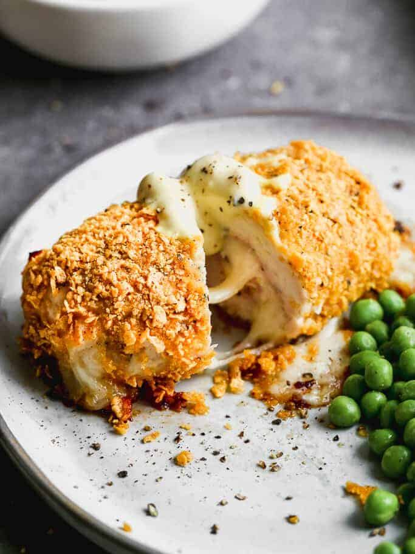

Cordon Bleu

Description:
This recipe is inspired by the method by husband grew up eating, which includes crushed cornflakes as the coating. It’s absolutely delicious and I especially love that I can make it ahead of time, for company./p>
Ingredients:
BREADCRUMBS
- Panko breadcrumbs - 1/2 cup for Super Easy or 1 cup for Quick Dredge
- Oil spray
CHICKEN
- 2 small chicken breasts, around 6-7oz/180-210g each
- Salt and pepper
- 4 slices swiss cheese (Note 1)
- 4 to 6 slices of ham, about 2.5oz/75g (Note 2)
METHOD 1: SUPER EASY
- 3 tbsp mayonnaise
- 1 1/2 tbsp Dijon mustard
METHOD 2: QUICK DREDGE
- 1 egg
- 2 tsp plain flour
DIJON CREAM SAUCE (MAKES 1 CUP)
- 1 1/2 tbsp butter
- 1 1/2 tbsp flour
- 1 1/4 cups milk (Note 3)
- 2 tbsp Dijon mustard
- 3 tbsp parmesan cheese, finely grated
Steps:
- Preheat oven to 200C/390F (standard) or 180C/350F (fan).
- Spread panko breadcrumbs on a baking tray and spray with oil. Bake for 3 minutes or until light golden. Remove
and scrape into bowl straight away.
- Cut a pocket into each chicken breast, as per the photo below.
- Fold the cheese in half and place 2 pieces inside each pocket. Do the same with the ham. Close the pocket, seal
with 2 toothpicks. Sprinkle with salt and pepper.
SUPER EASY METHOD
- Mix the mayonnaise, mustard, salt and pepper in a bowl. Spread onto the top and sides of the chicken (not
underside).
- Sprinkle panko over the chicken, using your other hand to press the breadcrumbs onto the side of the chicken.
Spray with oil.
QUICK DREDGE METHOD
- Whisk egg and flour. Dip chicken into egg mixture, then into the panko breadcrumbs. Transfer to tray, spray with
oil.
BAKING
- Bake for 25 to 30 minutes, or until golden brown and just cooked through. Remove toothpicks, serve with the Dijon
Cream Sauce.
DIJON CREAM SAUCE
- Melt butter over medium heat in a small saucepan. Add flour and cook for 1 minute.
- Add half the milk and whisk until the flour mixture is blended in.
- Add remaining milk, mustard and cheese. Cook for 3 minutes, whisking constantly, until thickened. It will thicken
as it cools.
- Remove from heat, add salt and pepper to taste. Serve with chicken.